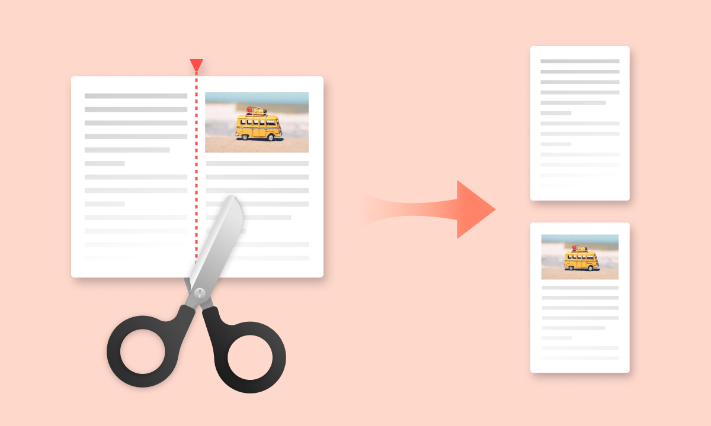
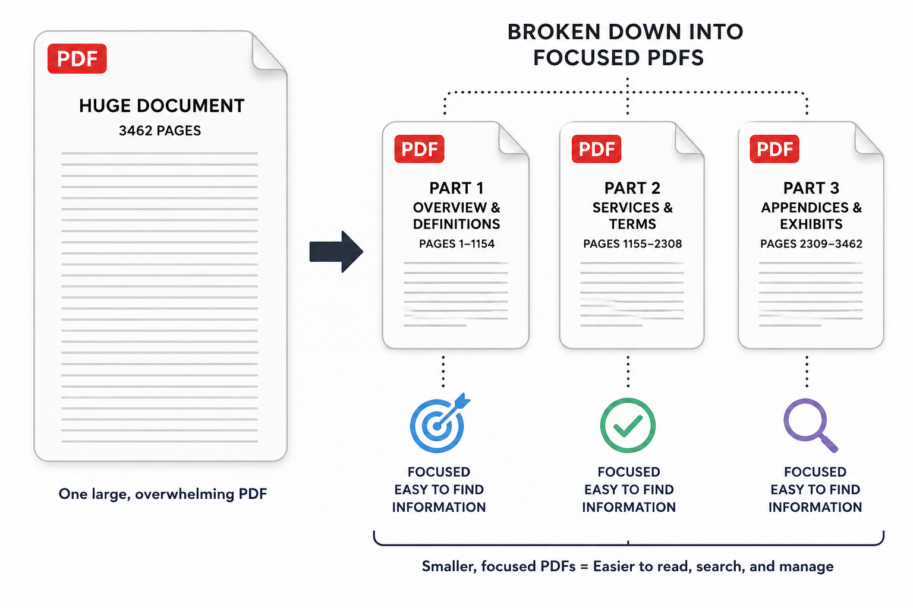
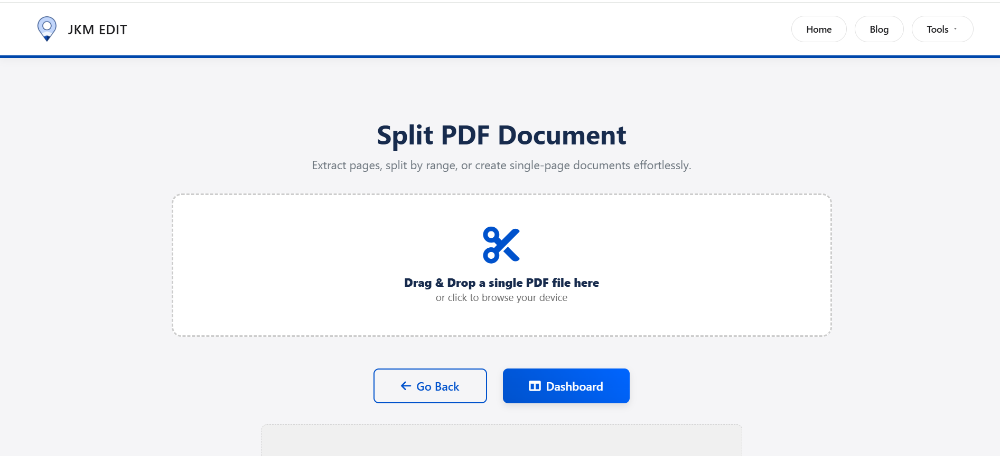
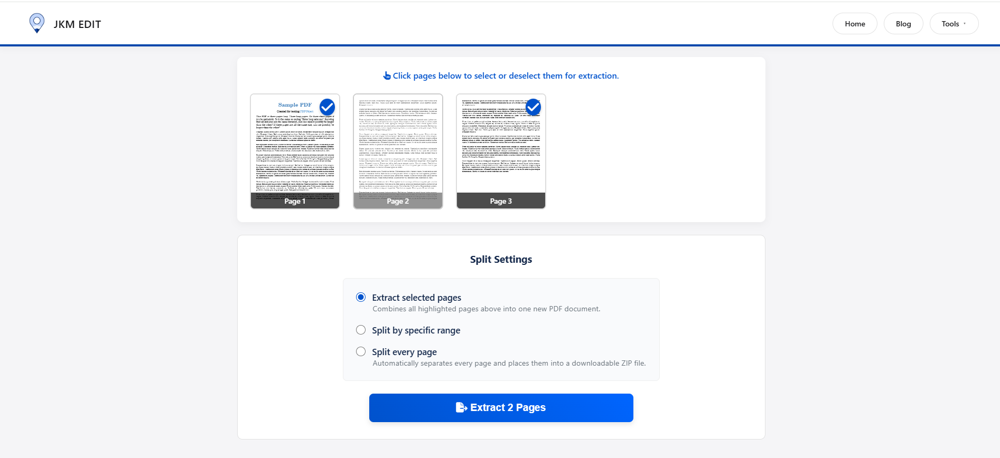
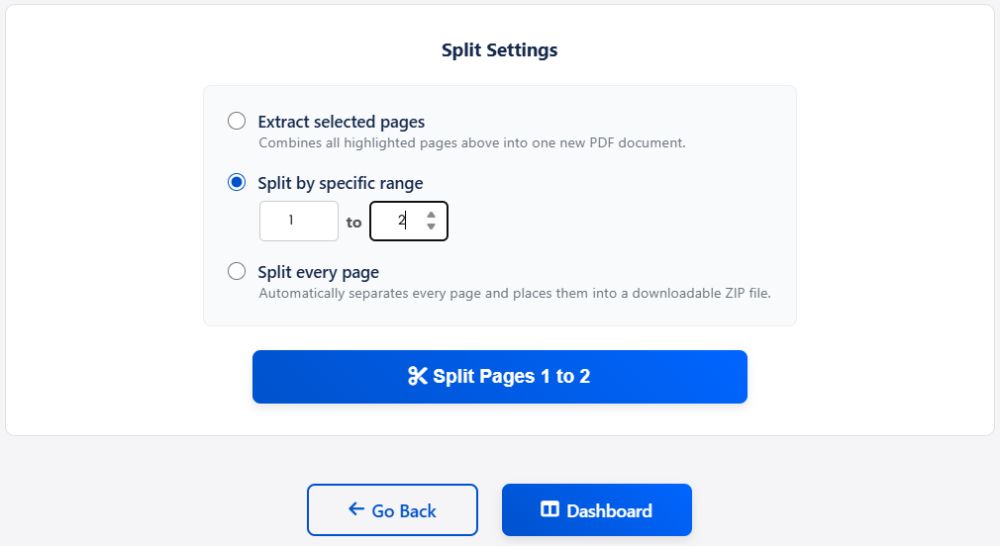
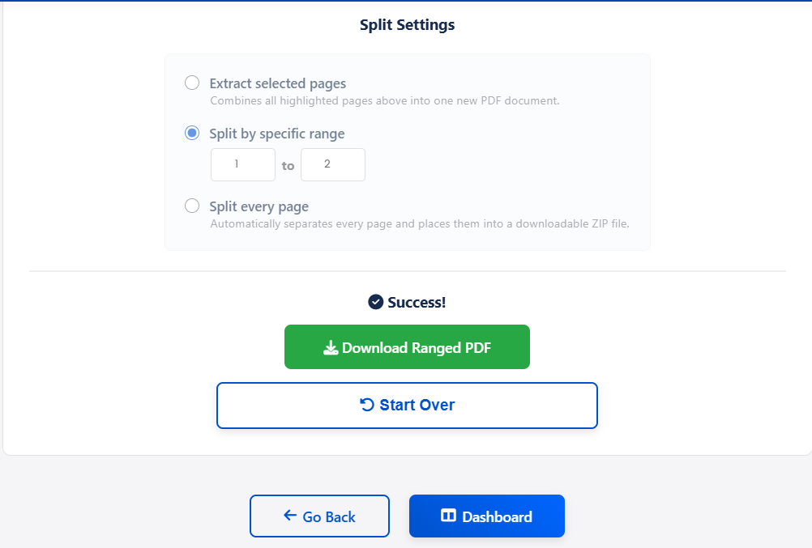

How to Split PDF Files Online Easily — Complete Guide
A complete guide for better document control and organization. Break large PDFs into focused, usable parts instantly without losing quality.

When a Single PDF Becomes a Management Problem
A PDF file is designed to keep documents structured in one place, but in real usage, that structure often becomes a limitation rather than a benefit.
A single PDF may contain:
- Multiple chapters that are not needed together
- Scanned pages from different sources
- Combined reports from different departments
- Mixed documents merged into one file unintentionally
Over time, this creates a practical issue:
Users don’t need the entire document — they need only specific parts of it.
This is where splitting becomes essential, not as a feature, but as a document management requirement. To handle this efficiently, users rely on tools like the JKM Edit Split PDF Tool available through JKM Edit Home.
📌 What is a PDF Split Tool? (Important Concept)
A PDF split tool is a document utility that allows users to divide a single PDF file into multiple smaller files based on pages, ranges, or sections. But more importantly, it is not just a “file cutter.”
A better way to understand it:
A PDF split tool is a document restructuring system that helps users extract only the meaningful parts of a file while discarding unnecessary bulk for a specific use case.
Instead of working with a long, heavy document, users can convert it into:
- Focused sections
- Topic-based files
- Page-specific extracts
- Application-ready documents

📊 Simple Example:
A 120-page PDF may include an Introduction section, Chapters 1–5, an Appendix, and Extra references. But a user may only need Chapter 2 and Chapter 3.
A split tool allows this transformation:
- Before: 1 large PDF file
- After: Multiple smaller, purpose-specific PDFs
Why PDF Splitting is More Important Than Most Users Realize
Most people think splitting is only about convenience, but in real workflows, it directly affects productivity and communication clarity.
1. It Reduces Document Overload
Large PDFs often create unnecessary cognitive load. Users spend more time searching than reading.
2. It Improves Information Targeting
Instead of sending full documents, users can share only relevant sections directly.
3. It Aligns Documents With Real-World Usage
Different stakeholders need different parts of the same file:
- HR needs certificates only
- Finance needs invoices only
- Students need chapters only
Ready to Extract What You Need?
Stop sending huge files to people who only need a single page. Extract focused PDFs instantly.
Try JKM Edit Split PDF Free
How PDF Splitting Actually Works (Simple Explanation)
When you upload a PDF into a split tool, the system:
- Reads all pages of the document
- Separates them into individual units
- Applies user-defined selections (specific pages or ranges)
- Generates new independent PDF files
This process does not change the content or lower the resolution — it only reorganizes structure.
Step-by-Step Guide: How to Split PDF Using JKM Edit
Step 1 — Open the Tool
Visit the official secure link: JKM Edit Split PDF Tool.

Step 2 — Upload Your PDF File
Select a document such as a report, class notes, a scanned file, or an application form.

Step 3 — Decide What to Extract
This is the most important step. You can choose:
- Specific individual pages (e.g., 2, 5, 9)
- Continuous range (e.g., 1–10)
- Multiple sections (chapter-wise extraction)

Step 4 — Process the Split
Click “Split PDF” and let the system securely process the file in seconds.
Step 5 — Download Output Files
You will receive clean separated PDFs ready for sharing, uploading, printing, or archiving.

Watch Full Tutorial: How to Split PDF Files Using JKM Edit
Prefer a visual guide? Watch this quick step-by-step video tutorial demonstrating exactly how fast and seamless it is to separate your documents.
Real-World Scenarios Where Split PDF is Essential
Students
- Separating massive exam chapters for quick review
- Extracting specific homework notes from textbooks
Office Users
- Dividing annual company reports by department
- Sending client-specific pages without exposing internal data
Government Submissions
- Uploading required document sections only (like ID pages)
Freelancers
- Sharing selected portfolio pages tailored to specific clients
Why JKM Edit Split PDF Tool is Efficient
Unlike traditional software which can be bloated and slow, the JKM Edit platform approaches file management differently.
| It Avoids (Traditional Software) | It Focuses On (JKM Edit) |
|---|---|
| Installation requirements & updates | Direct, browser-based access |
| Complex, confusing interfaces | Simple, user-friendly selection |
| Slow processing times | Fast, instant cloud processing |
| Unnecessary technical steps | Direct, streamlined workflow |
Frequently Asked Questions (FAQs)
Yes, using modern online tools like JKM Edit, you can split PDF files and extract specific pages completely free without hidden charges or premium subscriptions.
Absolutely. You can select single pages (like page 5), a continuous range (like pages 1-10), or custom selections to extract exactly what you need while ignoring the rest.
No. The splitting process simply reorganizes the document structure. The extracted pages maintain their exact original resolution, text clarity, and formatting.
No installation is required. JKM Edit operates entirely in your web browser, allowing you to split files on any Mac, Windows, Android, or iOS device instantly.
Yes, JKM Edit prioritizes user privacy. Documents are processed securely directly through the web tool, ensuring your personal and business data remains safe.
Final Insight
A PDF split tool is not just a utility — it is a decision-making tool for document clarity.
It helps users move from:
- Bulk information → Structured information
- Full documents → Relevant sections
- Confusion → Clarity
That is why tools like JKM Edit Split PDF Tool are becoming absolutely essential in modern digital workflows.
Take Control of Your Documents
Experience the easiest, fastest, and most secure way to separate PDF pages online. No installation required.
Split PDF Now